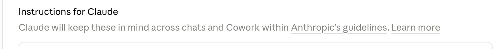
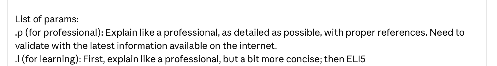
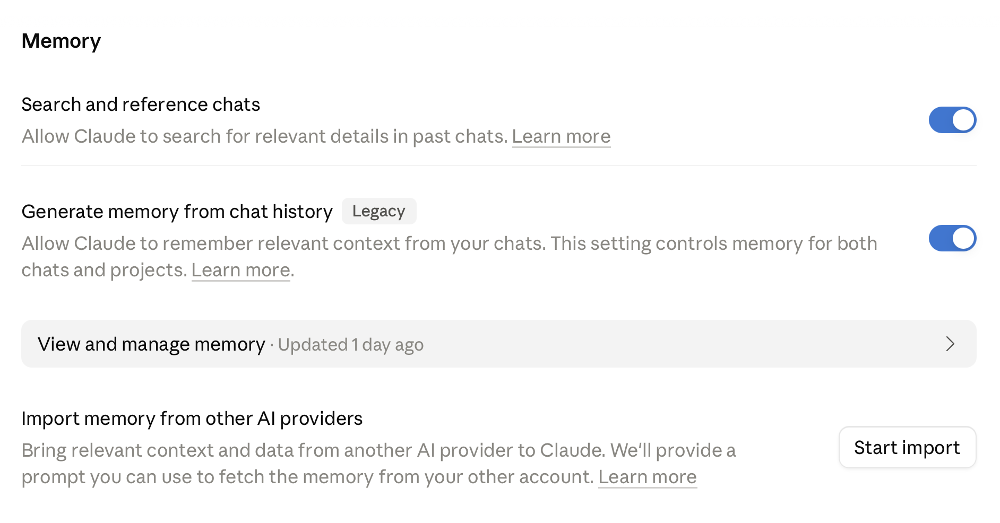
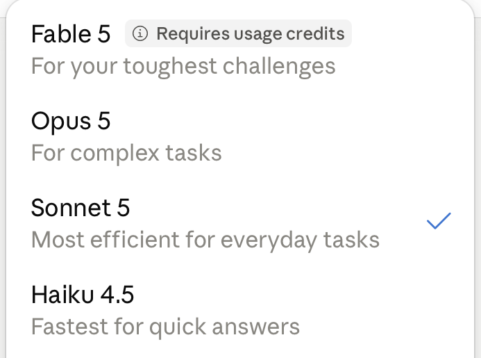
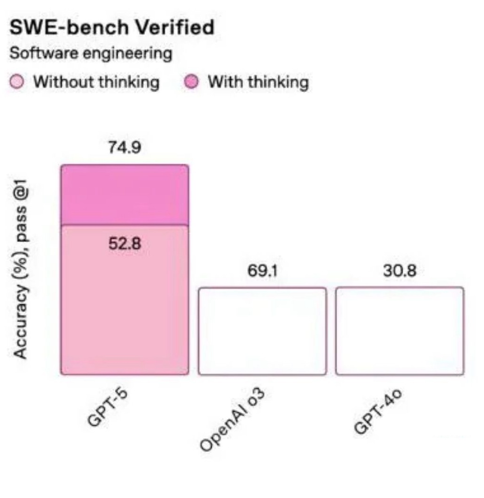

Xem AI như một nhân viên mới
Treat AI like a new hire
Một người mới giỏi đến đâu cũng cần được onboard: biết bối cảnh công ty, được giao đúng việc, có công cụ phù hợp. AI cũng vậy.
No matter how talented a new hire is, they still need onboarding: understanding the company context, being given the right tasks, having the right tools. AI is the same.
Điểm mấu chốt khi làm việc với AI không phải là "ra lệnh cho một cỗ máy biết tuốt", mà là quản lý một nhân viên mới: tiềm năng lớn, nhưng kết quả chỉ tốt khi có môi trường và cách giao việc đúng.
The key to working with AI is not "commanding a know-it-all machine", but managing a new hire: great potential, yet good results come only with the right environment and the right way of assigning work.
Một mô hình như Claude đã sẵn vài năng lực nội tại — thứ ta chỉ cần bật đúng và dùng đúng:
A model like Claude already ships with a few built-in capabilities — things we just need to turn on and use correctly:
- Nguyên tắc & thái độ làm việc — hướng dẫn (instruction) và phím tắt tuỳ chỉnh (param).
- Principles & working attitude — instructions and custom shortcuts (param).
- Bộ nhớ — nhớ ngữ cảnh qua các cuộc trò chuyện (memory).
- Memory — retaining context across conversations (memory).
- Năng lực & nỗ lực — chọn mô hình (model) và mức "suy nghĩ" (effort).
- Capability & effort — choosing the model and the level of "thinking" (effort).
- Kết quả & phòng ban — trả về file/artifact, giữ ngữ cảnh riêng theo dự án (project).
- Output & departments — returning files/artifacts and keeping context scoped per project.
Phần còn lại của bài đi qua ba việc quan trọng nhất khi "onboard" AI: thiết lập, chọn mô hình, và ra yêu cầu.
The rest of this article walks through the three most important steps when "onboarding" AI: setting up, choosing a model, and writing the request.
Thiết lập trước khi giao việc
Set up before assigning work
Vài phút cài đặt trong Settings giúp mọi câu trả lời sau đó bám đúng vai trò, đúng phong cách của bạn — không phải nhắc lại mỗi lần.
A few minutes in Settings keeps every later answer aligned to your role and your style — without repeating yourself each time.
Hướng dẫn (instructions): ba lớp
Instructions: three layers
Trong Settings → Profile, hướng dẫn cho Claude xếp thành ba lớp: hệ thống (Anthropic đặt, không sửa) · công ty (Admin cài chung cho tổ chức) · cá nhân (bạn tự viết). Lớp cá nhân là nơi đáng đầu tư nhất:
In Settings → Profile, the instructions for Claude form three layers: system (set by Anthropic, not editable) · company (set org-wide by an Admin) · personal (written by you). The personal layer is the one most worth investing in:
"Tôi là kỹ sư bảo trì tại một công ty sản xuất ở Việt Nam. Tôi thường soạn báo cáo sự cố và lịch bảo dưỡng. Khi trả lời, ưu tiên tiếng Việt, đơn vị hệ mét, trình bày ngắn gọn có đầu mục.""I am a maintenance engineer at a manufacturing company in Vietnam. I often draft incident reports and maintenance schedules. When you answer, prefer Vietnamese, metric units, and a concise bulleted layout."

Định nghĩa một lần, gọi lại bằng phím tắt
Define once, recall with a shortcut
Bạn có thể cài phím tắt tuỳ chỉnh ngay trong phần hướng dẫn: gõ đúng ký hiệu thì Claude đổi cách trả lời tương ứng.
You can set up custom shortcuts right inside your instructions: type the symbol and Claude switches its answering style accordingly.

Bật bộ nhớ (memory)
Turn on memory
Khi bật Memory, Claude nhớ được ngữ cảnh từ các cuộc trò chuyện trước — mở chat mới không phải giải thích lại từ đầu. Hai công tắc đáng bật: tìm & tham chiếu chat cũ, và tự ghi lại vài điều về bạn (vai trò, mối quan tâm, việc đang làm) sau mỗi cuộc.
With Memory on, Claude retains context from earlier conversations — a new chat no longer means explaining everything from scratch. Two switches worth turning on: search & reference past chats, and automatically note a few things about you (your role, interests, current work) after each conversation.

Chọn đúng mô hình cho đúng việc
Pick the right model for the job
Mô hình mạnh hơn không phải lúc nào cũng tốt hơn — quan trọng là khớp năng lực với độ khó của việc.
A stronger model is not always better — what matters is matching capability to the difficulty of the task.
Có thể xem các mô hình như nhân sự với "mức lương" khác nhau:
You can think of the models as staff on different "salaries":
| Model | Ví nhưLike a | Phù hợpGood for | Chi phíCost |
|---|---|---|---|
| Fable 5 | CEOCEO | Bài toán khó nhất, mơ hồ nhấtThe hardest, most ambiguous problems | $$$$ |
| Opus 5 | Quản lýManager | Việc phức tạp, nhiều bước, suy luận sâuComplex, multi-step work with deep reasoning | $$$ |
| Sonnet 5 | NV lâu nămSenior staff | Việc hằng ngày, cân bằng tốc độ & chất lượngEveryday work, balancing speed & quality | $$ |
| Haiku 4.5 | NV mớiNew staff | Việc quen, khối lượng lớn, cần nhanhFamiliar, high-volume work that needs to be fast | $ |

Cùng một câu hỏi, ba mô hình trả lời khác nhau: mô hình nhỏ khuyên đi bộ (chỉ tính quãng đường); mô hình lớn hiểu rằng rửa xe nghĩa là mang chính chiếc xe đến nên khuyên lái xe. Mạnh hơn không phải để "thông minh hơn" một cách trừu tượng, mà để hiểu đúng ý ở những chỗ mơ hồ.Same question, three different answers: the small model suggests walking (it only weighs the distance); the large model understands that a car wash means bringing the car itself, so it suggests driving. Being stronger is not about being "smarter" in the abstract, but about grasping the real intent where things are ambiguous.
Model × Effort: một ma trận nhỏ
Model × Effort: a small matrix
Ngoài mô hình, còn có effort — mức "suy nghĩ" của mô hình. Ghép hai chiều lại:
Beyond the model, there is also effort — the model's level of "thinking". Combine the two dimensions:
- Nhỏ + effort thấp — hợp lý cho việc đơn giản, cần nhanh.
- Small + low effort — sensible for simple work that needs to be fast.
- Nhỏ + effort cao — bẫy: nghĩ lâu không cứu được mô hình nhỏ.
- Small + high effort — a trap: thinking longer will not rescue a small model.
- Lớn + effort thấp — bẫy: mô hình lớn cũng trả lời hời hợt.
- Large + low effort — a trap: even a large model answers superficially.
- Lớn + effort cao — hợp lý cho việc khó, nhiều bước, đáng công.
- Large + high effort — sensible for hard, multi-step work that is worth the effort.
Effort có 5 mức (thấp → tối đa) và là tín hiệu điều chỉnh, không phải hạn mức cứng: việc thật khó thì mức thấp vẫn suy nghĩ, chỉ ngắn hơn. Bật "thinking" có thể tăng đáng kể độ chính xác, nhưng effort cao không phải lúc nào cũng đáng tiền.
Effort has 5 levels (low → maximum) and is a tuning signal, not a hard cap: for genuinely hard work, even a low level still thinks, just more briefly. Turning on "thinking" can raise accuracy considerably, but high effort is not always worth the money.

Ra yêu cầu rõ (prompt)
Write a clear request (prompt)
Giao việc rõ cho AI cũng như giao việc rõ cho người: nói ai làm, trong bối cảnh nào, cần gì, trả về ra sao.
Assigning work clearly to AI is like assigning it clearly to a person: say who is doing it, in what context, what is needed, and how to return it.
Một prompt tốt thường đủ năm phần
A good prompt usually has five parts
Đây là công cụ hỗ trợ, không phải khuôn bắt buộc — câu đơn giản cứ hỏi thẳng. Một mẹo hay là reverse prompting: nhờ chính AI "đưa ra các câu hỏi cần thiết để hoàn thành việc này" rồi trả lời từng câu.
This is a helper, not a mandatory template — for simple questions, just ask directly. A handy trick is reverse prompting: ask the AI itself to "list the questions needed to complete this task", then answer them one by one.
Ba kiểu prompt cơ bản
Three basic prompt styles
Zero-shot
Hỏi thẳng, không ví dụ. Dùng khi việc đã quen và mẫu trả lời đã rõ.
Ask directly, no examples. Use it when the task is familiar and the expected answer is clear.
Few-shot
Đưa vài ví dụ mẫu rồi yêu cầu làm theo. Dùng khi cần đúng cấu trúc, đúng tông giọng.
Give a few sample examples, then ask it to follow them. Use it when you need an exact structure and tone.
Chain-of-Thought
Yêu cầu trình bày từng bước. Dùng khi nhiều bước tính toán và cần thấy chỗ sai. Mô hình mạnh nay tự suy luận — CoT chủ yếu giúp ta thấy quá trình đó.
Ask it to lay out each step. Use it when there are many calculation steps and you need to spot mistakes. Strong models now reason on their own — CoT mainly helps us see that process.
Mở Claude và yêu cầu nó lên kế hoạch cho một chuyến đi Đà Lạt. Cứ viết như cách bạn vẫn làm, chưa cần khuôn mẫu — rồi thử viết lại theo năm phần ở trên và so sánh hai câu trả lời.Open Claude and ask it to plan a trip to Da Lat. Write it the way you normally would, no template yet — then rewrite it using the five parts above and compare the two answers.
AI là một nhân viên mới đầy tiềm năng. Muốn nó làm tốt: thiết lập trước, chọn đúng mô hình, và giao việc thật rõ.AI is a new hire full of potential. To get good work from it: set up first, pick the right model, and assign work very clearly.
Nguồn hình ảnh & ví dụ: tài liệu đào tạo AI nội bộ (Claude.ai settings, OpenRouter, OpenAI SWE-bench).
Source of images & examples: internal AI training materials (Claude.ai settings, OpenRouter, OpenAI SWE-bench).